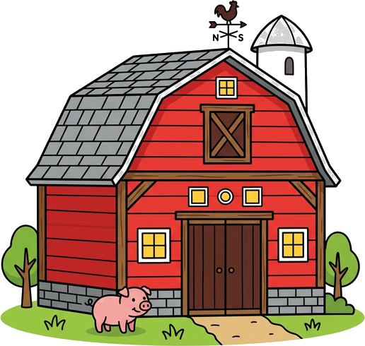
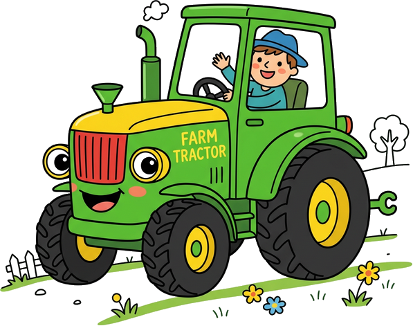
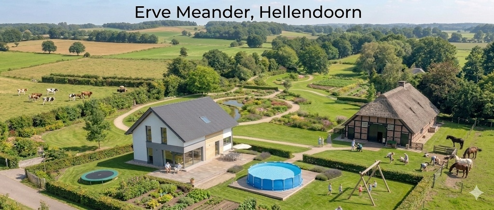

Maart 2026
Oriëntatiefase & Terrein
We zijn nu in de oriëntatiefase. Er zijn oa. gesprekken gevoerd met de gemeente en we zoeken naar grond en families.
Lees meer




Een kleinschalig, duurzaam zorg-erf in de regio Hellendoorn. Een warm en veilig thuis voor (jong)volwassenen met een zorgvraag. Ons hoofddoel is het bieden van een gelukkig, betekenisvol leven midden in de natuur, waar bewoners de ruimte, rust en persoonlijke aandacht krijgen die ze verdienen. We streven ernaar eind 2027 / begin 2028 de deuren te openen. Ben je op zoek naar een woonplek voor een verwant, wil je je aanmelden als vrijwilliger, of als donateur bijdragen aan deze missie? Neem dan direct contact met ons op via het formulier onderaan de pagina!
Bouw met ons meeNet als de rivier de Regge meandert het leven in al zijn diversiteit. Op Erve Meander realiseren we een liefdevolle, kleinschalige woonboerderij speciaal ontworpen voor circa zes bewoners met een zorgvraag.
Ons absolute hoofddoel:
Bewoners moeten hier een gelukkig, volwaardig leven leiden in een gezonde, prikkelarme en
duurzame omgeving. Hier staat warmte, geborgenheid en persoonlijke aandacht voorop. We brengen
generaties samen: van jong tot oud woont men zij aan zij.
Huidige status:
We bevinden ons volop in de pioniersfase! De bouwkundige kaders voor een duurzaam, ecologisch
houtskelet-casco worden momenteel gesmeed. De realisatie van de bouw staat gepland voor 2027 of
2028.
Zorgeloos wonen met een gerust hart. Voor de meanderende levensfase waarin intensieve begeleiding gewenst is, bieden we volwaardige 24-uurs zorg. Op het erf realiseren we zes hoogwaardige woonplekken, kleinschalig opgezet zodat er altijd voldoende tijd en rust is voor elke individuele bewoner. Elke bewoner heeft een eigen ruime slaapkamer, en deelt een sfeervolle, grote huiskamer.
Op het erf is bovendien 24/7 de vaste zorgbeheerder aanwezig. Dit zorgt voor korte lijntjes en een uiterst vertrouwde en veilige omgeving. Het is de geborgenheid en warmte van een hecht, traditioneel buurtschap, gecombineerd met de zekerheid en professionaliteit van moderne zorg op maat.
Erve Meander opereert onder een onafhankelijke Stichting met een deskundige Raad van Bestuur. Dit garandeert lange-termijn zekerheid, transparantie en een sterke focus op het welzijn van bewoners, onafhankelijk van commerciële winstdoelstellingen.
"Wij bouwen op bestaande landbouwgrond en geven deze terug aan de gemeenschap als een plek van zorg en natuur."
Heb je vragen over ons ouderinitiatief? Hieronder vind je antwoord op de meest gestelde vragen. Benieuwd of we een match zijn? Neem contact met ons op!
Onze plek is er voor (jong)volwassenen met een WLZ-indicatie die baat hebben bij rust, natuur en intensieve, liefdevolle begeleiding in een veilige woonomgeving.
We bouwen een duurzaam houtskeletbouw-pand met verdieping (inclusief trappen). Iedereen krijgt een eigen, veilige slaapkamer, gecombineerd met een hele royale, gezellige gezamenlijke woonkeuken en volop levendige buitenruimte.
We zitten nog in de voorbereidende pioniersfase in de regio Hellendoorn e.o. De verwachte oplevering van het pand en de feestelijke opening is in 2027 of 2028.
De benodigde zorg in huis wordt gefinancierd vanuit het PGB. Ouders en verwanten houden gezamenlijk de regie over de inkoop van een vast, vertrouwd zorgteam dat bij de visie past.
Pioniersgeest! We doen dit echt samen. Actieve betrokkenheid bij de opzet, het uiteindelijke dagelijkse beheer, en de warme community daaromheen is een absolute must.
Samen bouwen aan een warm, duurzaam en liefdevol thuis in de regio Hellendoorn.
Wij dromen niet alleen van een betere woonplek voor onze zoon, we zijn hem daadwerkelijk aan het bouwen. Erve Meander wordt een kleinschalig ouderinitiatief in het buitengebied van Hellendoorn. Een veilige haven voor (jong)volwassenen met een zorgvraag (WLZ), waar niet de regels, maar een gelukkig en volwaardig leven centraal staat.
We bevinden ons in de pioniersfase. De visie is helder, de financiële en bouwkundige kaders (een duurzaam, ecologisch houtskelet-casco) worden nu gesmeed. De beoogde realisatie van de bouw staat gepland voor 2027 of 2028.
We zoeken ouders en verwanten die, net als wij, de regie in eigen hand willen nemen. Die geloven dat zorg anders kan: kleinschaliger, groener, en met vaste, vertrouwde gezichten. Omdat we de deuren pas over een paar jaar openen, heb je nu dé unieke kans om vanaf de tekentafel mee te denken over de invulling van de zorg, de inrichting van het pand en de vorming van de bewonersgroep.
Een project als dit vraagt om doorzettingsvermogen, een nuchtere aanpak en een gezamenlijke schouder eronder. Ben jij op zoek naar een warme, toekomstbestendige woonplek voor jouw kind en schrik je niet terug van een beetje pionieren?
Een bloeiende, geurige oase waar bewoners en buurtgenoten samenkomen. Drink een kop koffie in de zon of help mee. Vrijwilligers zijn altijd welkom!
Een levendige verbinding met de lokale samenleving. Studenten van scholen in en rondom Hellendoorn doen hier waardevolle praktijkervaring en stages op.
Van zaadje tot oogst. We telen onze eigen groenten en kruiden voor vers, gezond, lokaal en onbespoten eten op het bord van bewoners.
We zijn nu in de oriëntatiefase. Er zijn oa. gesprekken gevoerd met de gemeente en we zoeken naar grond en families.
Lees meerDe pre-fab elementen voor de Norges Hus-woningen zijn geselecteerd. Een prachtige stap richting duurzaam en gezond wonen.
Lees meerDe officiële aftrap! Aanleg van de fundering en de eerste grote contouren van ons zorg-erf zullen zichtbaar worden.
Lees meer